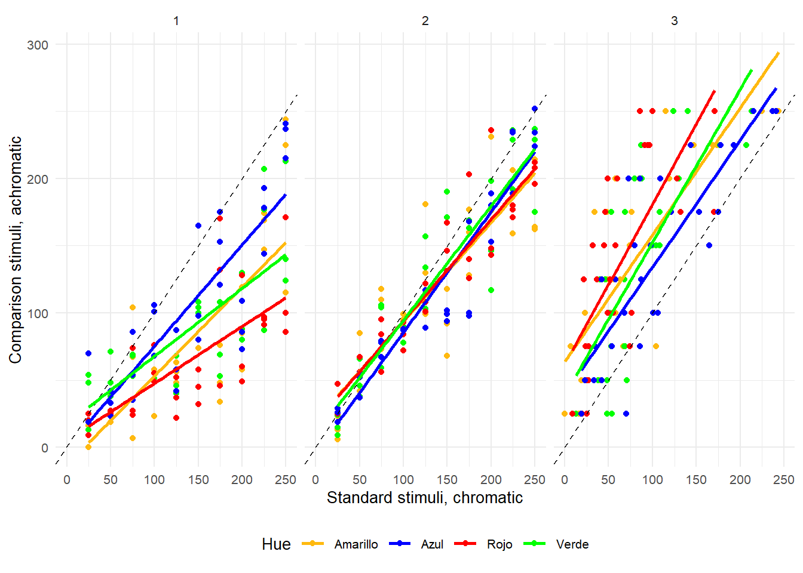

Práctica 1: Efectos cromáticos
Conceptos previos
Un estímulo puede caracterizarse por diversas características físicas. En esta práctica, nos centraremos en aquellas relacionadas con cómo percibimos el color. Para comenzar, es necesario mencionar que el color no es una propiedad de los objetos, sino una respuesta perceptiva a un estímulo determinado que depende de:
Las características de la fuente lumínica y las longitudes de ondas predominantes.
La reflectancia de la superficie sobre la que se refleja la energía proviniente de la fuente lumínica.
Las caracteristicas del sistema perceptivo que se encarga de dar sentido al estímulo. Por ejemplo, para ser capaces de discriminar entre estimulaciones de diferentes longitudes de onda sería necesario poseer 2 tipos de conos diferentes (principio de univarianza). De lo contrario, únicamente seríamos capces de discriminar entre intensidades lumínicas.

Desde una perspectiva física, el factor más importante para describir el color es la longitud de onda (\(\lambda\)). La longitud de onda se trata de una dimensión contínua descrita por el conocido como espectro electromagnético. Aunque nuestros sentidos nos permiten acceder de diferentes maneras a ciertas partes de este contínuo, la visión únicamente nos permite acceder a aquellas longitudes de onda dentro de la región de los 380 a los 760 nm aproximadamente. Sin embargo, en la mayoría de casos no estamos expuestos a una estimulación equienergética (es decir, con la misma energía en todo el espectro). Por lo contrario, las superficies sobre las que se proyecta esa energía, absorben parte de la misma y reflejan otra parte. Por esta razón es importante conocer cómo puede reaccionar una superficie a la exposición de una misma radiación:
- Reflexión selectiva: Indica la cantidad relativa de longitudes de onda que una superficie refleja dada una luz blanca (equienergética). Por ejemplo, un tomate absorbería longitudes de onda cortas y medias (azules y verdes), mientras que reflejaría ondas de longitud larga (rojo).

- Curva de reflectancia: Indica la intensidad absoluta de longitudes de onda reflejadas. En la siguiente figura se puede ver cómo el área bajo la curva que describe el color azul más claro es mayor que la del azul más oscuro. De la misma manera, si el tomate anterior tuviese una superficie mate, percibiríamos un tono rojo mà s oscuro porque reflejaría menos cantidad de energía.

La combinación de ambas caracteristicas sobre cómo reaccionan diferentes superficies a la luz son suficientes para describir la percepción del color en diferentes sistemas. En concreto, nosotros vamos a definir las características del color mediante el sistema HSV. Dentro de esta categorización encontramos las siguientes dimensiones:
Matiz/Hue: Se relaciona con cantidad relativa de las longitudes de onda reflejadas. Es lo que comunente denominamos como color. Su correspondencia psicofísica sería la experiencia subjetiva de la percepción de diferentes tonos cromáticos (rojo, verde, azul y amarillo principalmente).
Luminosidad o intensidad (también llamado valor): Hace referencia a la cantidad absoluta de luz que refleja una superficie en una determinada direción o ángulo por unidad de superficie. En el SMI se mide en \(cd/m^{2}\) (candelas por metro cuadrado). Este es un factor de vital importancia en determinadas situaciones. Por ejemplo, las empresas de telefonía móvil han logrado superar en los últimos dispositivos la barrera de las 300 \(cd/m^{2}\) optimizando el consumo de batería para favorecer la visibilidad bajo la luz solar. Dentro del espectro electromagnético estaría indicado por la amplitud de onda. Por su parte, su correspondencia psicofísica sería el brillo, que estaría definido como la sensación percibida de la intensidad lumínica.
Saturación: Hace referencia a la proporción de blanco/negro con respecto al matiz cromático puro. Es decir, cuando hay una alta intensidad únicamente en una longitud de onda (o rango de longitudes de onda), el color será muy saturado. Mientras que si la intensidad está repartida uniformemente a través del espectro electromgnético se dirá que está poco saturado.

Como podemos ver, dependiendo de la intensidad y distribución del rango del espectro visible disponible, podemos categorizar diferentes tipos de estimulación de forma independiente. Sin embargo, cuando se trata de la correspondencia psicofísica entre el estímulo físico y nuestra sensación consciente, diferentes efectos observados en la literatura indican que las dimensiones del sistema HSV están ínterelacionadas.
Efecto Abney
Cambio en el matiz percibido inducido por cambios en la pureza cromática (saturación). No es debido ni a cambios en la longitud de onda ni en el brillo.

Tanto el Hue como la luminosidad se mantienen constantes, mientras que lo que varía es la saturación. Esto produce un cambio en el matiz percibido.
Efecto Bezold-Brücke
Cambio en el matiz percibido inducido por cambios en el brillo. NO es debido ni a cambios en la longitud de onda ni en la saturación.

Tanto el matiz como la saturación se mantienen constantes, mientras que lo que varía es la luminosidad. Esto produce un cambio en el matiz percibido.
Efecto Helmholtz-Kohlrausch
Un estímulo cromático (con matiz), es percibido como más brillante que un estimulo acromático aunque ambos tengan la misma luminancia.

Tanto el matiz como la saturación se mantienen constantes, mientras que lo que varía es la luminosidad. Esto produce un cambio en el brillo o luminosidad percibida.
Parte práctica: Efecto Helmholtz-Kohlsrauch
Este efecto es descrito como la sensación de que un estímulo cromático (con matiz), es percibido como más brillante que un estimulo acromático aunque ambos tengan la misma luminancia.
Estímulación física:
\[\begin{equation} \label{HK_F} \ Lum_{Crom} = Lum_{Acrom} \end{equation}\]Sensación perceptual:
\[\begin{equation} \label{HK_S} \ Brillo_{Crom} > Brillo_{Acrom} \end{equation}\]
Para poner a prueba este efecto, pedimos a los participantes ajustar la luminancia del estímulo acromático (estímulo test o de comparación) para hacer coincidir en brillo con el estímulo cromático (estímulo estándar o de referencia).
Estamos también interesados en saber si hay algún matiz que se percibe como más brillante que otro, por lo tanto creamos un experimento con la siguiente metodología.
Variables
Variables independientes (VI):
Matiz del estímulo (rojo, verde, azul, amarillo).
Luminancia del estímulo cromático.
Variable dependiente (VD), aquella que manipula el observador:
Luminanica asignada por el participante al estímulo cromático.
Como no somos procesadores de información infalibles y nuestra respuesta tiene cierta variabilidad o error, hemos de realizar cada combinación de condiciones varias veces. En este caso, para que el experimento sea corto hemos introducido únicamente 3 repeticiones. Por lo tanto: 4 matices * 10 luminancias del estímulo cromático * 3 repeticiones dan un total de 120 ensayos o trials.
Hipótesis
Dado el mismo brillo percibido
- La luminancia del estímulo acromático será mayor que la del estímulo cromático
Análisis de datos
id_1 <- read.table("./pia/P1/EkiCroma_effect.dat", header =T) %>%
mutate(id = 1)
id_2 <- read.table("./pia/P1/EkiCroma_no_effect.dat", header = T) %>%
mutate(id = 2)
id_3 <- read.table("./pia/P1/EkiCroma_reffect.dat", header =T) %>%
mutate(id = 3)
ekicroma <- bind_rows(id_1,id_2,id_3) %>%
arrange(NEst) %>%
mutate(Hue = ifelse(NEst < 10, "Amarillo", ifelse(NEst < 20, "Verde", ifelse(NEst < 30, "Rojo", "Azul")))) En la siguiente figura se pueden observar los resultados para diferentes observadores.
ggplot(ekicroma,aes(Stand,Compar,color=Hue)) +
geom_point() +
geom_abline(linetype = 2) +
geom_smooth(method ="lm", se = F) +
facet_grid(~id) +
labs (x = "Standard stimuli, chromatic", y = "Comparison stimuli, achromatic") +
coord_cartesian(xlim= c(0,max(ekicroma$Stand), ylim = c(0,max(ekicroma$NEst)))) +
scale_color_manual(values = c("darkgoldenrod1","blue","red","green")) +
theme_minimal(10) +
theme(legend.position="bottom")
Models <- ekicroma %>%
group_by(id) %>%
do(model = anova(lm(Compar ~ Stand * factor(Hue), data = .))) %>%
tidy(model) %>%
mutate(p.value = format.pval(round(p.value,3),eps = 0.01))
kable(Models %>% filter(id ==1),digits=2)| id | term | df | sumsq | meansq | statistic | p.value |
|---|---|---|---|---|---|---|
| 1 | Stand | 1 | 212666.77 | 212666.77 | 179.74 | <0.01 |
| 1 | factor(Hue) | 3 | 25316.17 | 8438.72 | 7.13 | <0.01 |
| 1 | Stand:factor(Hue) | 3 | 10341.63 | 3447.21 | 2.91 | 0.038 |
| 1 | Residuals | 112 | 132515.14 | 1183.17 | NA | NA |
kable(Models %>% filter(id ==2),digits=2)| id | term | df | sumsq | meansq | statistic | p.value |
|---|---|---|---|---|---|---|
| 2 | Stand | 1 | 401172.80 | 401172.80 | 554.71 | <0.01 |
| 2 | factor(Hue) | 3 | 855.79 | 285.26 | 0.39 | 0.757 |
| 2 | Stand:factor(Hue) | 3 | 2696.69 | 898.90 | 1.24 | 0.298 |
| 2 | Residuals | 111 | 80276.42 | 723.21 | NA | NA |
kable(Models %>% filter(id ==3),digits=2)| id | term | df | sumsq | meansq | statistic | p.value |
|---|---|---|---|---|---|---|
| 3 | Stand | 1 | 345519.55 | 345519.55 | 158.17 | <0.01 |
| 3 | factor(Hue) | 3 | 24603.80 | 8201.27 | 3.75 | 0.013 |
| 3 | Stand:factor(Hue) | 3 | 3963.63 | 1321.21 | 0.60 | 0.613 |
| 3 | Residuals | 112 | 244663.01 | 2184.49 | NA | NA |
Ejercicios para resolver en clase:
Con ayuda de las tablas ANOVA y el gráfico anterior identifica:
¿Qué indica la linea de lineas discontinuas del gráfico?
¿Hay algún observador en el que se observe el efecto Helmholtz-Kohlsrauch? Indica en cual o cuales.
¿Se observa un efecto del matiz/Hue sobre el brillo percibido?
Imagina que observamos el efecto Helmholtz-Kohlsrauch y un efecto del matiz:
¿Cómo sería el gráfico para un observador modelo?
¿Esperarías un efecto de la interacción entre ambas variables?
¿Como sería, por lo tanto, la tabla ANOVA esperada?
Conclusiones Práctica 1
Aunque se percibe el mismo brillo para ambos estímulos, la luminancia del cromático es menor que la del estímulo acromático.
El efecto es distinto dependiendo del matiz utilizado.
En condiciones de laboratorio, efectos visuales dan resultados consistentes aún con muestras muy pequeñas, aunque existe cierta variabilidad. La variabilidad entre los participantes e incluso de un mismo participante puede deberse entre otros factores a:
Momento del día.
Luz ambiental: luz del sol, halógeno, bombillas incandescentes, etc.
Pantalla utilizada (su rango dinámico).
Concentración empleada.